The Voice of the Shofar, Part 4. Yovel: the Jubilee
The name "shofar-yovel" carries the idea of the liberation promised by the LORD.
"…in the day of atonement shall ye make proclamation with the shofar throughout all your land. And ye shall hallow the fiftieth year, and proclaim liberty throughout the land unto all the inhabitants thereof; it shall be a JUBILEE unto you; and ye shall return every man unto his possession, and ye shall return every man unto his family." (Lev. 25:1–15)
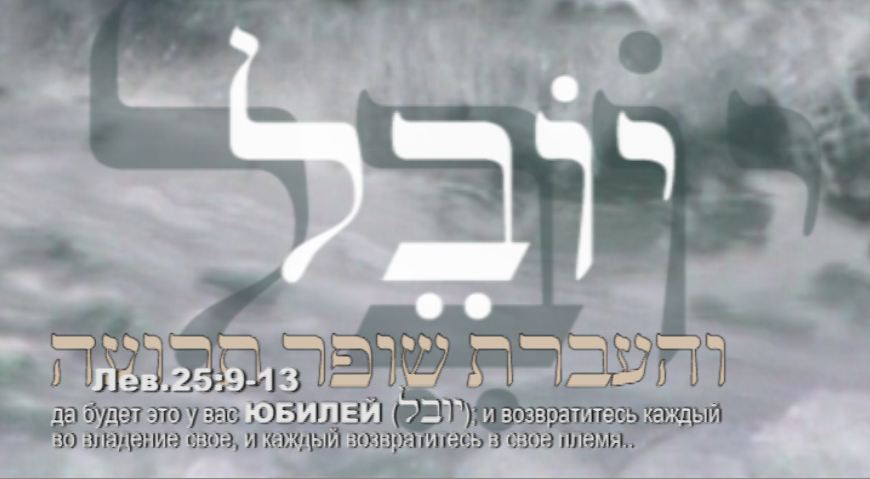
"It shall be a JUBILEE unto you"
The word JUBILEE is familiar to us. It comes from the Latin JUBILAEUS, which in turn is an adaptation of the ancient Hebrew yobel, or more correctly, yovel.
The meaning of the word: יוֹבֵל (H3104), Heb. YoVeL (jubilee): 1. a ram; 2. a ram's horn (used for blowing); 3. jubilee, of the jubilee (year).
It should be noted that Hebrew writes only consonants, without vowel letters.
So this word (jubilee) can be read in Hebrew in two ways:
— YoVeL, meaning a ram or a ram's horn. But it can also be read as a passive form of the verb, YuVaL.
— YuVaL, "led", as the prophet Isaiah says: "…as a lamb that is led (יוּבָל, H2986) to the slaughter… for the transgression of my people" He suffered punishment (Isa. 53:7–8).
So the ram is called YoVeL (jubilee) in Hebrew precisely because an important trait of a sheep is obedience, readiness to follow the shepherd obediently, that is, to be led, YuVaL.
This gives us very important insights into the third name of the shofar and its essence, YOVEL.
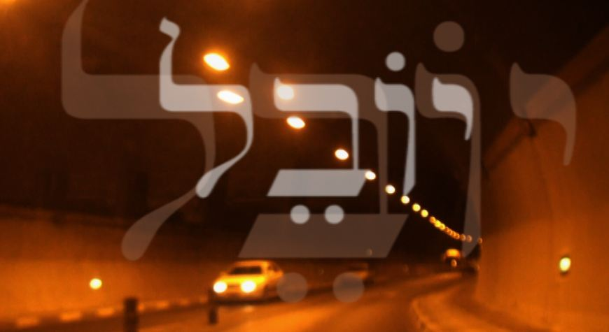
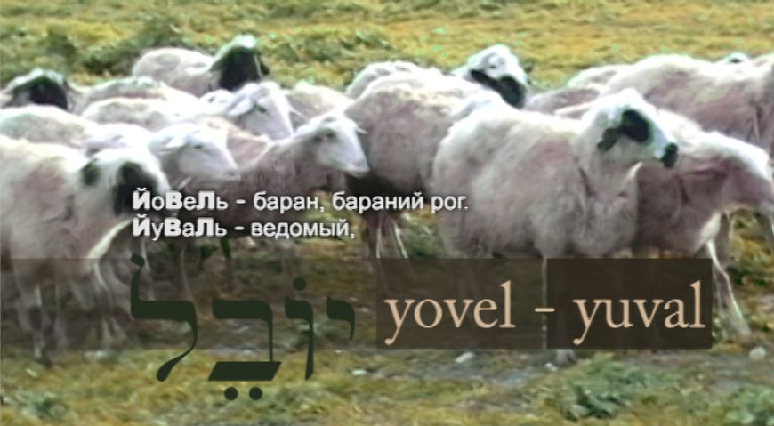
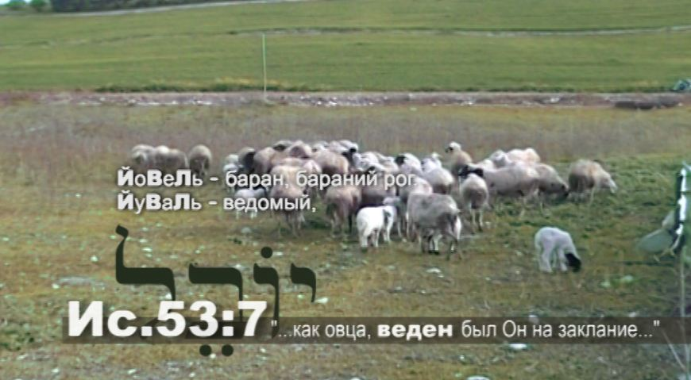
All the illustrations to this article are stills from the film "The Voice of the Shofar"; click to enlarge.
The fiftieth year is called the YOVEL year, that is, the year of the ram, or of blowing the ram's horn. The year took its name from the name of the shofar, yovel, with which it was proclaimed. The horn of the sacrificial animal, the YOVEL, announced the great liberation, entering into rest, the return of each person to his inheritance.
*
A prophetic act
To return to their inheritance, the children of Israel crossed the parted waters of the Jordan in the fifteenth century after the creation. In inheriting the promised land they had to destroy the barrier that stood in their way, the mighty walls of Yeriho. This event became a turning point not only for Jewish history but for the destiny of all mankind. The sound of the horn yovel announced a special time for them, the time of the LORD's favour. Entering the gates of freedom, they were performing a prophetic act.
If at Sinai the shofar sounded from heaven, at the walls of Yeriho God commands people to blow the shofar: the kohanim, the priests, clothed to stand before Him. Israel itself becomes a kind of YOVEL horn, breaking down barriers and proclaiming God's liberation.
*
An image of the Temple
(Josh. 6:1–10)
2 And the LORD said unto Yehoshua: "See, I have given into thy hand Yeriho, and the king thereof, even the mighty men of valour.
3 And ye shall compass the city, all the men of war, going about the city once. Thus shalt thou do six days.
4 And seven kohanim (priests) shall bear seven shofars of rams' horns, shofars-yovelim (שופרות היבלים), before the ark; and the seventh day ye shall compass the city seven times, and the kohanim shall blow with the shofars (יתקעו בשופרת).
5 And it shall be, that when they make a long blast with the keren-yovel (the ram's horn), and when ye hear the voice of the shofar (קול השופר), all the people shall shout with a great shout; and the wall of the city shall fall down flat, and the people shall go up every man straight before him."
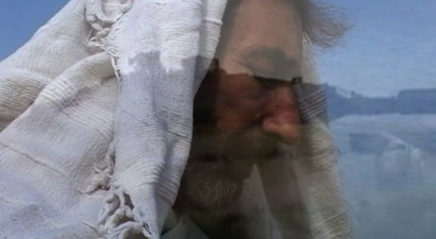
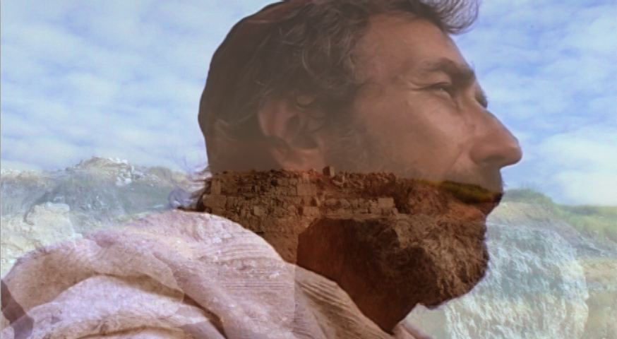
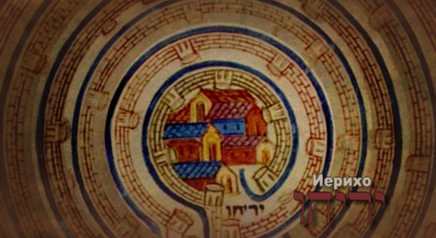
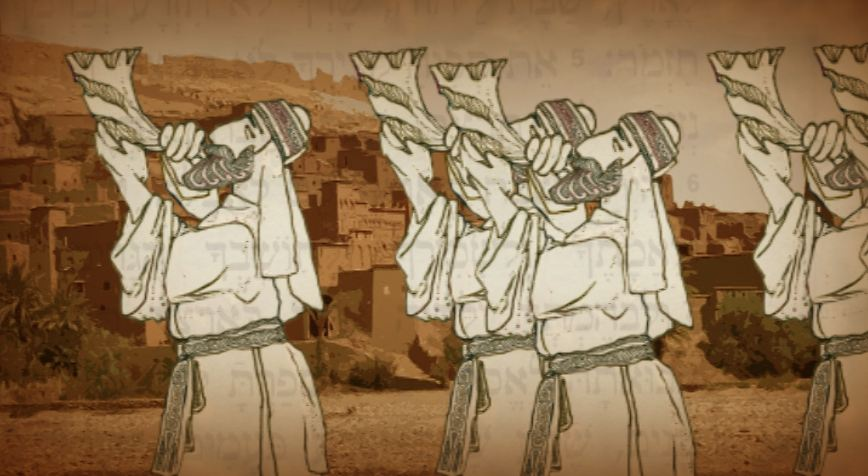
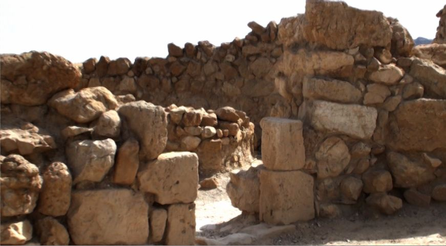
Archaeological excavations uncovered walls eight metres thick. The height of the wall was equal to its thickness. Some accounts say that the city of Yeriho was surrounded by seven rows of such walls. Archaeologists also found a strange circumstance: the walls fell not inwards into the city, as happens when a city is destroyed from outside, but outwards. This shows that the fall of these impregnable walls was not the result of undermining or of a battering ram.
They were thrown down from their very foundations, and on all sides at once.
The Bible tells us that the shofar played a special part in all this.
Both in the giving of the Torah at mount Sinai and at the walls of Yeriho (Jericho) we read of a long drawn-out sound, "meshokh ha-yovel". From Hebrew this can be translated as "the bleating of the ram". And if at the foot of mount Sinai, at the making of the covenant, the children of Israel heard "the bleating of the ram" (the yovel) from heaven…, then the walls of Yeriho were destroyed by the same long bleating of the ram, the yovel, coming from the blowing of the kohanim.
15. And it came to pass on the seventh day, that they rose early at the dawning of the day, and compassed the city after the same manner seven times; only on that day they compassed the city seven times.
16. And it came to pass at the seventh time, when the priests blew with the shofars, that Yehoshua said unto the people: "Shout; for the LORD hath given you the city."
20. So the people shouted, and the priests blew with the shofars. And it came to pass, when the people heard the sound of the shofar, that the people shouted with a great shout, and the wall fell down flat, so that the people went up into the city, every man straight before him, and they took the city.
It was a brilliant victory.
The name "shofar-yovel" has an overwhelming power that no army or force, no bolts and no impregnable walls can resist.
***
The only place in the Bible…
Yet in this episode of biblical history it is important to see something more than the destruction of a stronghold and a victorious military operation.
This is the only place in the Bible where we meet all three names of the shofar, keren, shofar and yovel, at the same time.
This shows how unique and important the event was. Three properties and actions of the horn were revealed here at once:
— keren: the revelation of the will and glory of the LORD, "a perfect calling";
— shofar: improvement, change, "a perfect correction";
— yovel: healing, restoration of rights, "a perfect freedom".
Those six days, when the kohanim blew and all Israel listened in silence, were a time of special, mystical creation. This blowing, and the attention the whole camp gave to it, brought about something important: on earth, in the universe, in the heart of everyone who listened.
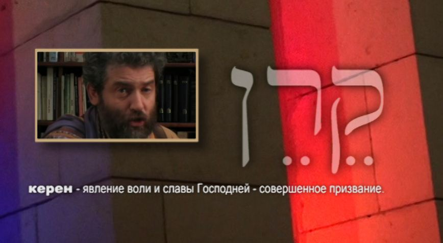
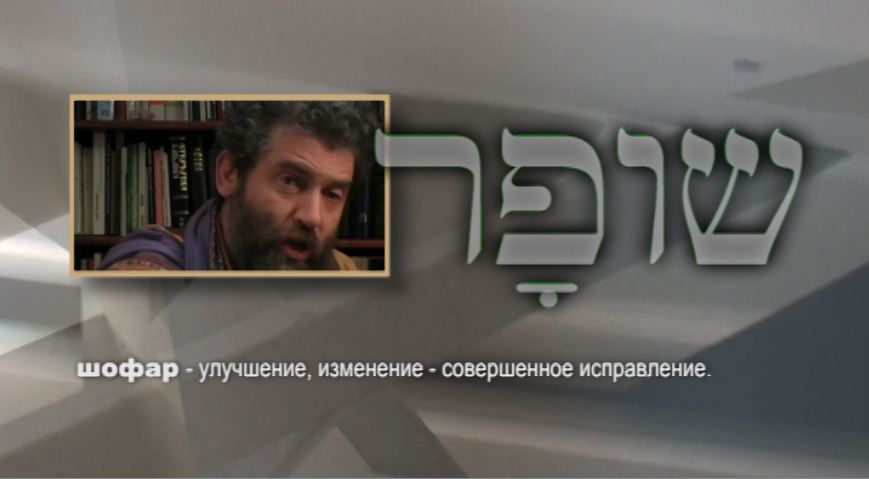
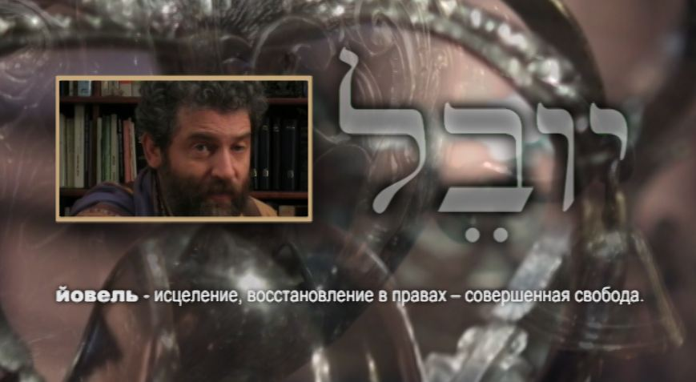
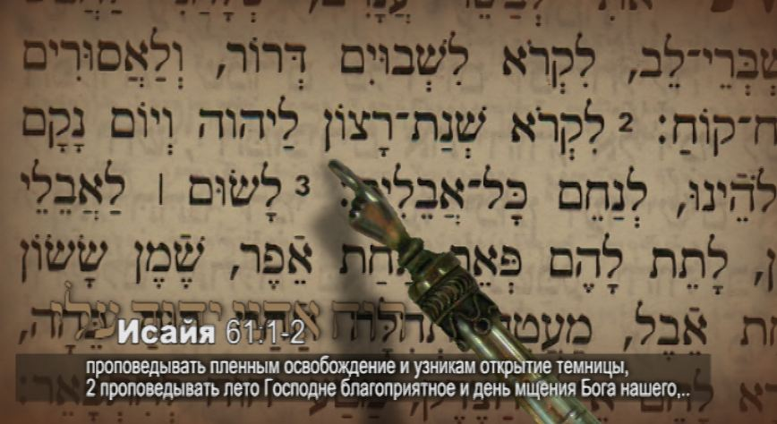
All the illustrations to this article can be enlarged by clicking.
These six days of creation were a time of building, of shaping a new level of relationship between the Most High and His people.
God brings Israel into His rest, into a special holy territory, the Promised Land, which is an image of the Temple.
He prepares them for priestly service:
— for forty years He humbles and purifies them in the wilderness;
— at mount Sinai He makes a covenant with the whole people and, as a seal of it, has all those born on the journey circumcised;
— like the ritual immersion of the priesthood, He immerses them in the waters of the Jordan;
— and so it was: "And the captain of the LORD's host said unto Yehoshua: 'Put off thy shoe from off thy foot; for the place whereon thou standest is holy.'" (Josh. 5:13–15)
And so our fathers stand at the entrance to the land of Canaan, as one enters the Temple to minister before the LORD. For once they possessed the land, the descendants of Avraham were to enter into the special presence of the Most High.
The Israelites marching around the walls of the city formed the image of a living temple, which the Most High was building out of His people in the Holy Land, of which God said: "My land".
"And the seven priests bearing the seven shofars of rams' horns, shofarot ha-yovelim (שופרות היובלים), before the ark of the LORD went on continually, and blew with the shofars; and the armed men went before them; and the rearward came after the ark of the LORD, the priests blowing with the shofars continually." (Josh. 6:13)
This account shows that we are dealing here not with an ordinary marching order or with routine preparations for taking Canaan, but with a special act. What was unusual here was that the ark of the Covenant was carried not by the Levites but by the kohanim. In the normal order, carrying the ark was exclusively the duty of the Levites; only they were permitted to move all the parts and furnishings of the Mishkan, the Tabernacle. The responsibility of the kohanim was to stand before the Most High, ministering before the ark of the Covenant.
So God's command that the kohanim, the priests, should accompany the ark of the Covenant and carry it on their shoulders points to the nature of what Israel was doing: a service of priestly ministry and worship.
— The ark is a kind of centre, immersed in the blowing of the shofar, like the Holy of Holies beneath the shadow of the cherubim.
— The kohanim with the ark, surrounded by the voice of the shofar, are placed inside the column of marchers, as the Holy of Holies is placed within the Holy Place.
— The Israelites, together with the strangers who had joined their camp, are like the courts of the Temple.
The emphasis on the number seven throughout (seven horns, seven kohanim, seven circuits of the city on the seventh day) points to a perfect action, to the fullness of God, and to the prospect of a special, perfect relationship between Israel and its Creator.
It is also symbolic that the seventh day, the sabbath, the holy sign of the Creator's covenant with Israel, became the day on which the stronghold of Yeriho was shattered.
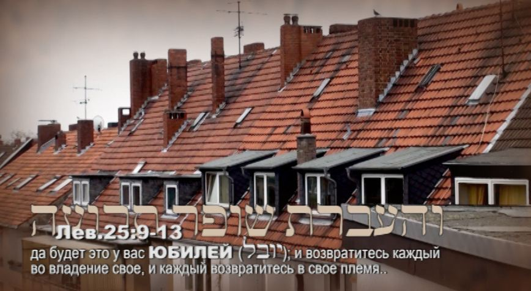
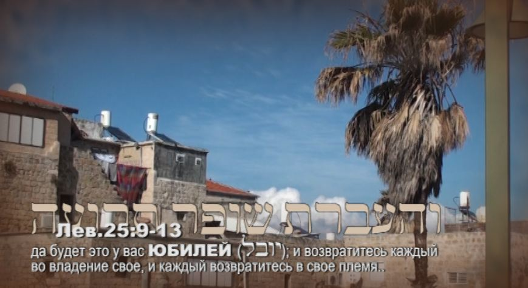
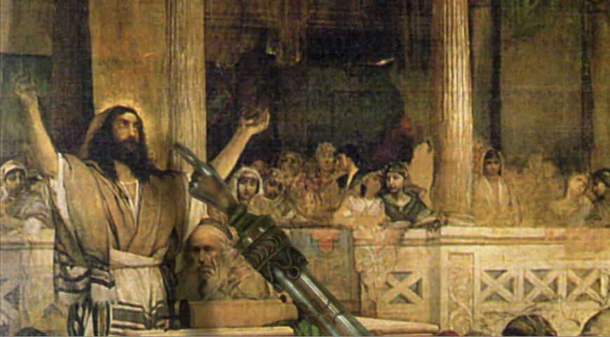
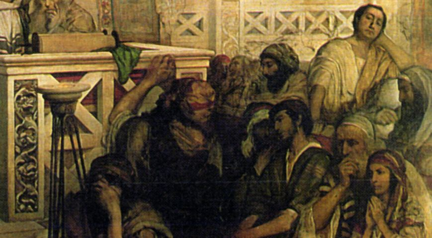
All the illustrations to this article can be enlarged by clicking.
The year of the LORD's favour
Fifteen hundred years after the fall of the walls of Yeriho and the prophetic priestly service of the Israelites in the "Living Temple", a Galilean Rabbi and Teacher, Messiah Yeshua, standing on the sabbath, the seventh day, in the middle of the synagogue in Natsrat, proclaims the greatest breaking of chains, strongholds and every bondage, first spoken by the prophet Yeshayahu:
"Ruakh Adonai alai… The spirit of the Lord GOD is upon me; because the LORD hath anointed me to bring good tidings unto the humble; He hath sent me to bind up the broken-hearted, to proclaim liberty to the captives, and the opening of the eyes to them that are bound; to proclaim the year of the LORD's good pleasure." (Isa. 61:1–3)
"And He began to say unto them: 'Today hath this scripture been fulfilled in your ears.'" His words, like the cry of the shofar, shook those present in the synagogue and made them tremble. And all said "amen" to them. (Luke 4:21)
In these words one could hear the echo of Sinai. It sounded like the crashing of the walls of Yeriho, the falling of barriers, the breaking of chains.
The Jubilee is the Messiah Himself. Only in Him can our life truly be changed; only in Him do we have restoration to the inheritance that we lost in the Garden of Eden.
In saying "Today this scripture has been fulfilled…" He announced the great liberation: shnat ratson la-Adonai, the year of the LORD's favour, the Jubilee (Yovel).
In saying "The Spirit of God is upon Me… the LORD has anointed Me to bring good tidings", the Messiah declares: "I am the YoVeL that proclaims liberation. I am the Lamb led to the slaughter (YuVaL). I am the YOVEL."
See also the other parts of "The Voice of the Shofar":
— Part 1
— Part 2
— Part 3
— Part 5
***
See also my film on this subject, "The Voice of the Shofar". Studio TORAH-ART. Composer Daniel Kruglov.
***
More video on keeping the commandment of blowing the shofar: see here.
Author: Ephraim Kalish / Torah-Art